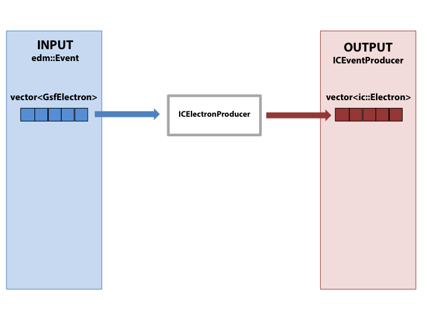

This page contains example workflows for producing ntuples.
Example Workflows
Simple production of a single collection

Simple production of a single collection
- Here we use the ICElectronProducer to copy the complete electron collection.
Example config:
import UserCode.ICHiggsTauTau.default_producers_cfi as producers
process.icElectronProducer = producers.icElectronProducer.clone(
branch = cms.string("electrons"),
input = cms.InputTag("gsfElectrons")
)
process.p = cms.Path(
process.icElectronProducer
)
Filter and produce a collection

Production of a filtered collection
- First we filter the input
vector<GsfElectron>, to select only electrons with pt > 20. For this we use a standard "RefSelector" type module which we provide with a cut-string and which produces an edm::RefVector<GsfElectron> collection. Other examples are found in python/default_selectors_cfi.py
- An
edm::RefVector behaves a lot like a vector of pointers, which in this case point to the electrons in the original collection.
- The ICElectronProducer will happily taken a
vector<GsfElectron> or RefVector<GsfElectron> as input - in fact we don't even have to specific which type - in the module code we access the collection via an edm::View<GsfElectron>, which can read both input types.
Example config:
import UserCode.ICHiggsTauTau.default_producers_cfi as producers
process.icElectronProducer = producers.icElectronProducer.clone(
branch = cms.string("electrons"),
input = cms.InputTag("selectedElectrons")
)
process.selectedElectrons = cms.EDFilter("GsfElectronRefSelector",
src = cms.InputTag("gsfElectrons"),
cut = cms.string("pt > 20")
)
process.p = cms.Path(
process.selectedElectrons+
process.icElectronProducer
)
Produce, request and merge collections

Merging of collections and requests
- Here we store collections of
PFTau and PFJet objects into our ntuples. In this example they are concrete vectors of objects, but they could equally well be filtered edm::RefVector inputs as in the previous example.
- As well as saving the tau and jet objects, we might also want to save information about the tracks that were used to build them. We could just save the entire
reco::Track collection in the event, but this is typically very large and so wastes a lot of space if we are only interested in a handful of tracks. The solution is object requests.
- Both these modules have the option to place requests for their constituent
reco::Track objects into the edm::Event. In the tau case, these are the tracks associated to the charged PF candidates that are used in an identified decay mode, and in the jet case these are all the tracks associated to the charged PF candidates in the jet. A request is simply a an edm::RefVector<reco::Track> collection, where each object points to a track in the main track collection.
- It's quite possible that some of the same tracks end up in both requests - after all each
PFTau is built from the PFJet collection. To remove the duplication we run a Merge module. This is a template module that is specialised to a named producer for each kind of collection we might want to merge. It takes any number of vector<T> or edm::RefVector<T> collections as input (which can also be mixed) and produces an edm::RefVector<T> collection containing all requests without duplicates.
- We can then use this merged collection as input to the ICTrackProducer, and efficiently store just the tracks we're interested in.
- Later in our analysis code we can recreate the links between these objects using the id() variable stored in each object. For example, the ic::Tau class has a method ic::Tau::constituent_tracks that returns a vector of id values. Each id value will be matched to the ic::Track::id value of an ic::Track in the track collection.
Example config:
import UserCode.ICHiggsTauTau.default_producers_cfi as producers
process.icTauProducer = producers.icTauProducer.clone(
branch = cms.string("taus"),
input = cms.InputTag("hpsPFTauProducer")
)
process.icPFJetProducer = producers.icPFJetProducer.clone(
branch = cms.string("pfJets"),
input = cms.InputTag("ak5PFJets")
)
process.icMergedTracks = cms.EDProducer('ICTrackMerger',
merge = cms.VInputTag(
cms.InputTag("icTauProducer", "requestedTracks"),
cms.InputTag("icPFJetProducer", "requestedTracks")
)
)
process.icTrackProducer = cms.EDProducer('ICTrackProducer',
branch = cms.string("tracks"),
input = cms.InputTag("icMergedTracks")
)
process.p = cms.Path(
process.icTauProducer+
process.icPFJetProducer+
process.icMergedTracks+
process.icTrackProducer
)